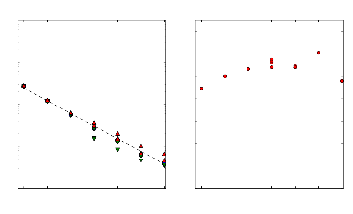

An Overview of MOM
Marshall Ward
National Computational Infrastructure
MOM summary
Geophysical Fluid Dynamics Laboratory (GFDL)
- Bryan-Cox model
- Hydrostatic Boussinesq dynamics
- Horizontal finite difference solver
- Vertical convective adjustment
- Arakawa B-grid for nonlinear conservation
- Viscous parameterisation of turbulence
History of MOM
- 1984: "Cox code"
- First public release
- 1991: MOM 1
- Fortran 77, POP fork
- 1996: MOM 2
- "Memory window" parallelisation
- 1999: MOM 3
- Explicit free surface (no elliptic solver)
- 2004: MOM 4
- Domain decomposition (HIM), generalised grids
- 2012: MOM 5
- Public, open source release
Basic equations of motion
Mostly a hyperbolic PDE with constraints
$$ \begin{align} p_z &= -g \rho \\ \mathbf{u}_t + \mathbf{u} \cdot \nabla \mathbf{u} + w \mathbf{u}_z + f \hat{z} \times \mathbf{u} &= -\tfrac{1}{\rho} \nabla p + \mathcal{F} \\ \phi_t + \mathbf{u} \cdot \nabla \phi + w \phi_z &= \mathcal{F}_\phi \ (\phi \in T, S, \ldots) \\ \nabla \cdot \mathbf{u} + w_z &= 0 \\ f(\rho, T, S, ...) &= 0 \end{align} $$But there are a lot of additional terms and forcings
FMS: Flexible Modeling System
Framework for MOM and SIS development
- Abstraction of common operations
- Communication (MPI, SHMEM, serial)
- Diagnostics
- IO (NetCDF)
- Coupler field exchange
- Time and calendar management
Principles of MOM
Arakawa grids

MOM is a B-grid model
"Northeast convention": $U(i,j)$ is northeast of $T(i,j)$
Generalised orthogonal coordinates

Generalised grids require $\Delta x$ arrays
Split timestepping
Ocean stratification yields fast and slow dynamics: $$\begin{align} \mathbf{u} &= \left\{ \frac{1}{H} \int_{-H}^\eta \mathbf{u} \right\} + \left\{ \mathbf{u} - \frac{1}{H} \int_{-H}^\eta \mathbf{u} \right\} \\ &= \mathbf{U} + \mathbf{u}' \end{align}$$
- Depth-averaged dynamics is ~100x faster
- Accuracy less important; simpler solvers
- Additional filtering required
$z^*$ vertical grid
Ocean surface-following coordinates
$z^* = H \left( \frac{z - \eta}{H + \eta} \right)$

- No initial spontaneous flow
- Simpler neutral physics parameterisations
- Always non-vanishing (except $\eta > -H$)
Building MOM
MOM community
The official MOM website:
http://www.mom-ocean.org
and the mailing list:
https://groups.google.com/forum/#!forum/mom-users
MOM source
MOM is publicly available and hosted on github:
git clone https://github.com/BreakawayLabs/mom.git
- Scientific maintainer: Stephen Griffies (GFDL)
- Repository maintainer: Nicholas Hannah (UNSW)
MOM codebase
bin/- Platform configuration
data/- Dataset management
doc/- Documentation
exp/- Compile and run scripts
src/- Model sourcecode
test/- Test and verification suites
MOM drivers
- MOM_solo
- Ocean-only
(src/mom5/drivers/ocean_solo.F90) - MOM_SIS
- Ocean-Sea Ice
(src/coupler/coupler_main.F90) - CM2M
- GFDL CM2 coupled model
- ACCESS-CM
- ACCESS coupled climate model
Build configuration
Makefiles are generated by GFDL's mkmf tool.
environs.<platform>- Software stack (e.g. modules)
mkmf.template.<platform>- Compiler settings and flags
We use the nci platform
environs.nci
source /etc/profile.d/nf_csh_modules
module purge
module load intel-fc/15.0.3.187
module load intel-cc/15.0.3.187
module load netcdf/4.3.3.1
module load openmpi/1.8.8-debug
setenv mpirunCommand "mpirun -np"
mkmf.template.ia64 header
CPPFLAGS =
FFLAGS_BASE = -v -V -what -fpp -fno-alias -stack_temps -safe_cray_ptr -ftz -i_dynamic -assume
byterecl -g -i4 -r8 -Wp,-w
FFLAGS_REPRO = -fltconsistency
FFLAGS_DEBUG = -check -check noarg_temp_created -check nopointer -warn -warn noerrors -debug
variable_locations -inline_debug_info -fpe0 -traceback -ftrapuv
FFLAGS = $(FFLAGS_BASE) -O2 -nowarn
FC = ifort
CC = icc
CFLAGS_BASE = -g -D__IFC
CFLAGS_DEBUG = -ftrapuv -traceback
CFLAGS = $(CFLAGS_BASE) -O2
LD = ifort
LDFLAGS = -Wl,-V,--verbose,-cref,-Map linker.map -lnetcdf -lmpi -lsma
MAKEFLAGS+=--jobs=8
Compilation
Use the MOM_compile.csh script:
cd exp
./MOM_compile --type MOM_SIS --platform nci
${CODEBASE}/exec/${platform}/${type}/fms_${type}.x
Running MOM
Experiment layout
./- Configuration files (namelists, etc.)
INPUT/- Grid data, forcings, input restarts
RESTART/- Output restart files (initially empty)
Configuration files
Four basic configuration files:
input.nml- Main configuration namelist
diag_table- Diagnostic fields and output rates
data_table- External data sets (boundary conditions)
field_table- Supplemental configuration
Mosaic grid system
grid_spec.nc- Top-level mosaic (metadata) file
ocean_mosaic.nc- Submodel mosaic: atmosphere, ocean, land
ocean_hgrid.nc- Horizontal grid for each submodel
ocean_topog.nc- Ocean bathymetry
Additional inputs
atm_ocean_mosaic_tile1Xocn_ocean_mosaic_tile1.nc- Coupling maps between submodels
land_mask.nc,ocean_mask.nc- Mask maps for land and ocean
ocean_vgrid.nc- MOM's vertical grid
Input fields
Defined in data_table
"ATM", "p_surf", "SLP", "./INPUT/slp.nc", "bicubic", 1.0
"ATM", "p_bot", "SLP", "./INPUT/slp.nc", "bicubic", 1.0
"ATM", "t_bot", "T_10_MOD" , "./INPUT/t_10.nc", "bicubic" , 1.0
"ATM", "sphum_bot", "Q_10_MOD" , "./INPUT/q_10.nc", "bicubic" , 1.0
"ATM", "u_bot", "U_10_MOD", "./INPUT/u_10.nc", "bicubic", 1.0
"ATM", "v_bot", "V_10_MOD", "./INPUT/v_10.nc", "bicubic", 1.0
"ATM", "z_bot", "", "", "bicubic", 10.0
"ATM", "gust", "", "", "bicubic", 0.0
"ICE", "lw_flux_dn", "LWDN_MOD", "./INPUT/ncar_rad.nc", "bicubic", 1.0
#"ICE", "sw_flux_dn", "SWDN_MOD" ,"./INPUT/ncar_rad.nc", "bicubic", 1.0
"ICE" , "sw_flux_vis_dir_dn", "SWDN_MOD", "./INPUT/ncar_rad.nc", "bicubic", 0.285
"ICE" , "sw_flux_vis_dif_dn", "SWDN_MOD", "./INPUT/ncar_rad.nc", "bicubic", 0.285
Format:
submodel, var_name, field_name, filepath, interp_method, scaling
Diagnostic output
MOM4p1_CORE_IAF_v20120531_0849_noRestore_runoff_fix
1 1 1 0 0 0
"ocean", 5, "days", 1, "days", "time",
"ocean_daily", 24, "hours", 1, "days", "time",
"ocean_grid", -1, "months", 1, "days", "time",
#=================================================================
"ocean_model","geolon_t","geolon_t","ocean","all",.false.,"none",2
"ocean_model","geolat_t","geolat_t","ocean","all",.false.,"none",2
"ocean_model","geolon_c","geolon_c","ocean","all",.false.,"none",2
"ocean_model","geolat_c","geolat_c","ocean","all",.false.,"none",2
"ocean_model","temp","temp", "ocean","all",.true.,"none",2
"ocean_model","salt","salt", "ocean","all",.true.,"none",2
"ocean_model","u","u", "ocean","all",.true.,"none",2
"ocean_model","v","v", "ocean","all",.true.,"none",2
Format:
file, out_rate, out_units, format, axis_units, axis_name
#=================================================================
module, var_name, out_name, file, "all", average, region, format
Tracer advection
Advection scheme for each tracer defined in
field_table:
"prog_tracers","ocean_mod","temp"
horizontal-advection-scheme = mdppm
vertical-advection-scheme = mdppm
restart_file = ocean_temp_salt.res.nc
ppm_hlimiter = 3
ppm_vlimiter = 3
/
Experiment runtime
Set in input.nml:
&coupler_nml
date_init = 1980,1,1,0,0,0
months = 0
days = 2
hours = 0
minutes = 0
seconds = 0
calendar = 'julian'
dt_cpld = 86400
/
- Largest nonzero date used
- Gregorian, Julian, noleap, and 360day calendars
MOM_solousesocean_solo_nml
Troubleshooting
Tuning and configuring models
- This is usually a very hard problem
- Most problems come down to numerical instability
- Coupled instabilites usually appear like this:
lookup_es: saturation vapor pressure table overflow, nbad= 1
due to blowup of other variables (e.g. temperature)
Timesteps
Explicit timesteps parallelise well, but they are inherently unstable
&ocean_model_nml
dt_ocean = 10800
vertical_coordinate = 'zstar'
time_tendency = 'twolevel'
baroclinic_split = 1
surface_height_split = 1
barotropic_split = 60
/
First try reducing your timesteps
Viscosities
- Turbulent systems push energy to small scales
- ... which are aliased to large scales (unstable)
&ocean_lap_friction_nml
! lap_friction_scheme='const'
lap_friction_scheme='general'
/
&ocean_lapcst_friction_nml
use_this_module=.false.
alap = 1e4
/
&ocean_lapgen_friction_nml
use_this_module=.true.
k_smag_iso=2.0
vel_micom_iso=0.005
/
Note: Biharmonic ($-\nabla^4$) viscosities are preferred
Feedbacks
Physical processes can yield unstable responses:
- Sea ice melt
- River runoff
- Accumulation in narrow straits
- Evaporation in shallow seas
Many parameterisations also have inherent numerical instabilities
At this point, you're on your own...
MOM communication
Point-to-point
mpp_send- Queues and calls
MPI_Isend mpp_recv- Queues and calls
MPI_Recv mpp_sync_self- Calls
MPI_Waitfor queued requests
Buffered calls are optional, and messages can be combined
(See src/shared/mpp/mpp_transmit.inc)
Point-to-point example
if (myid_y < size_y) then
do ii = myid_y + 1, size_y
call mpp_send(psiu2(isc:iec), lenx, pelist_y(ii))
end do
end if
call mpp_sync_self()
if(myid_y > 1) then
do ii = 1, myid_y - 1
call mpp_recv(psiu2(isc:iec), lenx, pelist_y(ii))
do i=isc, iec; do j=jsc, jec
psiu(i,j) = psiu(i,j) + psiu2(i)
end do; end do
end do
end if
Collectives
- mpp_sum
- Sum over ranks
- mpp_max
- Maximum value over ranks
- mpp_min
- Minimum value over ranks
Wrappers to MPI_Allreduce
Collective example
! Calculate total potential energy
pe_tot = 0.
do k= 1, nk
do j = jsc, jec
do i = isc, iec
pe_tot = pe_tot + Grd%dat(i, j) * Thickness%dzt(i, j, k) &
* Dens%rho(i, j, k, taup1) * Grd%tmask(i, j, k) &
* Thickness%depth_zt(i, j, k) * grav
end do
end do
end do
call mpp_sum(pe_tot)
Other comms
mpp_global_field- Gather global scalar or vector field onto rank
mpp_chksum- Call
mpp_sumas 8-byte integer recast
Generic interfaces
Interfaces have been provided for all cases
interface mpp_sum
module procedure mpp_sum_int8
module procedure mpp_sum_int8_2d
module procedure mpp_sum_int8_3d
module procedure mpp_sum_int8_4d
module procedure mpp_sum_int8_5d
module procedure mpp_sum_real8
module procedure mpp_sum_real8_2d
!...
end interface mpp_sum
- Scalars and vectors (2d, 3d, 4d, 5d)
- Integers, reals, and complex types
- 4 and 8 bytes
Domain stacks
Most mpp operations use an internal stack:
&fms_nml
domains_stack_size = 115200
/
MOM automatically sets this to tile size, but SIS does not
MOM grids
Grid domain decomposition

Layout configuration
&ice_model_nml
layout = 32, 30
io_layout = 1, 30
/
&ocean_model_nml
layout = 32, 30
io_layout = 1, 30
/
Output files can contain multiple tiles
Halo update

Grid indexing
- Global domain
isg, ieg, jsg, jeg- Compute domain
isc, iec, jsc, jec- Data domain
isd, ied, jsd, jed- Memory domain
ism, iem, jsm, jem
Grid API
mpp_define_domains- Set up the domain decomposition
mpp_get_data_domain- Get data domain indices
mpp_get_compute_domain- Get compute domain indices
mpp_update_domains- Stage a halo update
Domain API example
call mpp_define_domains([1, 100], 2, domain, pelist, halo=2)
call mpp_get_global_domain(domain, isg, ieg) ! isg, ieg = -1, 102
call mpp_get_data_domain(domain, isd, ied) ! isd, ied = -1, 52
call mpp_get_compute_domain(domain, isc, iec) ! isc, iec = 1, 50
allocate(a(isd:ied))
do i = isc, iec
a(i) = <perform computations>
end do
call mpp_update_domains(a, domain)
Miscellaneous
Internal profiler
- mpp_clock_id
- Define a new clock
- mpp_clock_begin
- Start timer
- mpp_clock_end
- Stop timer
Based on system_clock
Profiler example
initClock = mpp_clock_id('Init')
call mpp_clock_begin(initClock)
call fms_init
call constants_init
call coupler_init
call mpp_set_current_peset()
call mpp_clock_end(initClock)
Report in standard out:
. tmin tmax tavg tstd tfrac grain pemin pemax
Init 41.135 41.142 41.139 0.002 0.154 0 0 959
Bit reproducibility
MOM is largely bit reproducible, with a few conditions:
- Collectives (e.g.
mpp_sumare not reproducible! - Dynamic parts requiring collectives will have special flags:
Note that these are generally much slower&ocean_sbc_nml do_bitwise_exact_sum=.true. / - Diagnostics using collectives are generally not reproducible
- Raijin required this compiler flag:
probably due to int4 vs real8 alignmentmpifort <...> -align all
Bit reproducibility across layouts
Reproducibility for different tiles is generally never reproducible, with a few exceptions
&xgrid_nml
make_exchange_reproduce=.true.
/
Diagnostics
register_diag_field- Register the diagnostic, return an ID
send_data- Send data to diagnostic manager
diagnose_{2d,3d}{,_u}- Wrapper to
send_datafor masked fields
Diagnostics example
id_u(1) = register_diag_field ('ocean_model', 'u', &
Grd%vel_axes_u(1:3), Time%model_time, &
'i-current', 'm/sec', &
missing_value=missing_value, &
range=(/-10.0,10.0/), &
standard_name='sea_water_x_velocity')
call diagnose_3d_u(Time, Grd, id_u(1), Velocity%u(:,:,:,1,tau))
if (id_u(1) > 0) used = send_data (id_u(1), &
Velocity%u(:,:,:,1,tau), &
Time%model_time, rmask=Grd%mask(:,:,:), &
is_in=isc, js_in=jsc, ks_in=1, &
ie_in=iec, je_in=jec, ke_in=nk)
Subroutine overview
Relative breakdown

Tracer advection
Tracer fields
Temperature, salinity, submerged time ("age"), ...
update_ocean_tracerhorz_advect_traceradvect_tracer_mdppmppm_limit_sh
vert_diffuse_implicitsend_tracer_diagnostics
Tracer advection

MDPPM tracer advection
PPM limit
Implicit vertical diffusion

Tracer diagnostics
Time-implicit vertical diffusion
Uses a tridiagonal solver
TODO
Acceleration
Acceleration call tree
ocean_explicit_accel_abih_frictionpressure_forcehorz_advection_of_velocityvert_advection_of_velocitymomentum_source
Biharmonic friction
Pressure
Horizontal momentum advection

Vertical momentum advection
Momentum sources
Vertical mixing coefficient

Vertical mixing call tree
- vert_mix_coeff
- vert_mix_kpp_mom4p1
- vert_mix_tidal
KPP vertical mixing

Tidal mixing
Submesoscale restratification

Submesoscale call tree
- submeso_restrat
- compute_submeso_skewsion
- compute_psi
- compute_bldepth
Submesoscale skew diffusion
Mesoscale streamfunction

Boundary layer depth
Barotropic surface update

Barotropic call tree
- update_ocean_barotropic
- pred_corr_tropic_depth_bgrid
Tropic depth predictor/corrector

Barotropic solver
- Predictor-corrector (Euler) timesteps
- 80 barotropic steps per ocean (baroclinic) step
- Halos updated every 10 BT timesteps
- 42 halo updates per ocean step
Basic equation: $$\begin{align} \rho_o \left(\partial_t + f \hat{z} \times \right) \mathbf{U} &= \mathbf{G} - \left( H + \eta \right) \nabla \left( \rho_a + \rho_0 g \eta \right) \\ \eta_t &= - \nabla \cdot \mathbf{U} \end{align}$$
Density update
Implicit acceleration

U-cell thickness update
Ocean surface smoothing
Ocean surface smoothing
- Required to remove B-grid null mode
- Using biharmonic, Laplacian is recommended
- C-grid doesn't need this
Basic filtering: $$\eta_{n+1} = -\nabla^4 \eta_n$$
Shortwave radiation source

Velocity update
Velocity advection
T-cell thickness update
Density diagnostics

Surface boundary conditions
General diagnostics
Focus for the future
- Barotropic solver and filter
- Tracer advection
- Biharmonic viscosity
- Diagnostics
- Initialization runtime
- Fix these functions:
mpp_global_fieldpsi_computencar_rescale
psi_compute

Integration of $$\psi = \int_0^y u dy$$ for tile must collect values to the south
$N_\text{msg} \approx \frac{1}{2} N_x N_y^2$